La fiesta patronal de Cuquío, Jalisco, en honor a San Felipe Apóstol, se celebra cada año del 3 al 11 de mayo y es la celebración más importante del municipio.
Esta festividad combina profundamente la devoción religiosa con expresiones culturales y populares, y reúne a la comunidad local, visitantes y a muchos hijos
ausentes que regresan especialmente para estas fechas. Las actividades comienzan con un gran desfile de inauguración, donde participan escuelas, bandas de música,
charros, carros alegóricos y grupos folklóricos. Durante todos los días de fiesta se celebran misas solemnes, procesiones, y se adornan las calles y el templo principal
con flores y papel picado, en honor al santo patrono. Además de los actos religiosos, la fiesta incluye una feria popular con juegos mecánicos, antojitos típicos, puestos
de artesanías y eventos culturales como conciertos, presentaciones de danza y teatro. También hay castillos pirotécnicos, quema de toritos y bailes populares, que son parte
fundamental del ambiente festivo. Un elemento muy tradicional es la participación de las danzas regionales, como los tastoanes y danzas de la pluma, que representan el sincretismo
cultural entre lo indígena y lo español. En conjunto, la fiesta patronal de mayo en Cuquío no solo celebra la fe, sino también la identidad, el arte y la historia del pueblo.
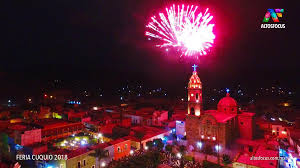
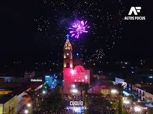
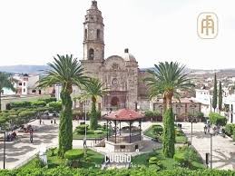
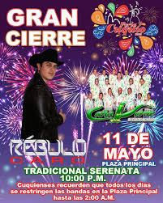
Fiestas Patronales en Rancherias
TEPONAHUASCO:
La fiesta patronal de Teponahuasco, en Cuquío, Jalisco, es una celebración que se lleva a cabo del 18 al 20 de diciembre. Durante estos días,
los habitantes y visitantes participan en una peregrinación que honra las tradiciones locales y religiosas.La festividad incluye actividades
como misas, procesiones, música tradicional y eventos culturales que reflejan la rica herencia de la región. Es un momento especial para la comunidad,
donde se fomenta la unión y se celebra la identidad cultural
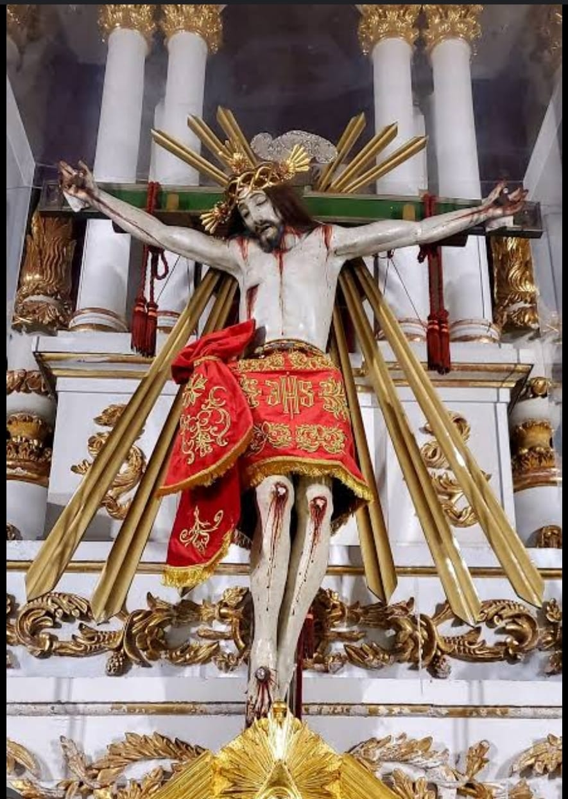
LAS CRUCES:
La fiesta patronal de Las Cruces, una ranchería de Cuquío, Jalisco, es una celebración en honor a San Isidro Labrador, el santo patrono de los agricultores.
Uno de los eventos más representativos es la cabalgata, donde los habitantes y visitantes participan en un recorrido a caballo que simboliza la unión y el orgullo
comunitario. Además, las festividades incluyen música tradicional, bailes, eventos religiosos y actividades culturales que reflejan la identidad de la región. Es un
momento especial para la comunidad, donde se fomenta la convivencia y se honra la herencia cultural.
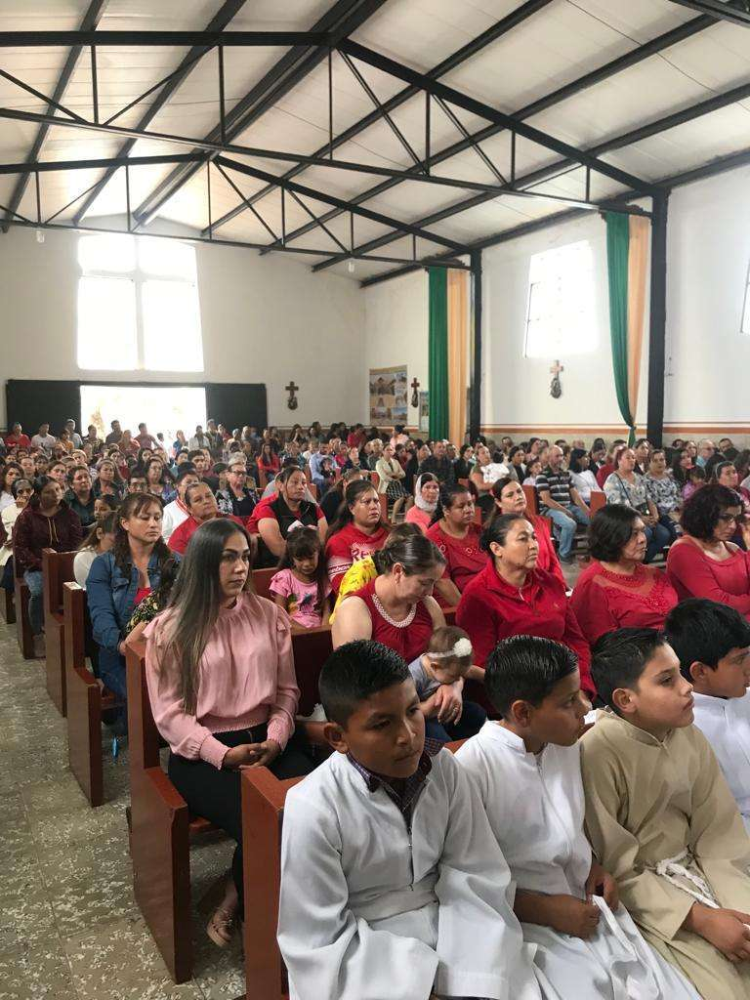
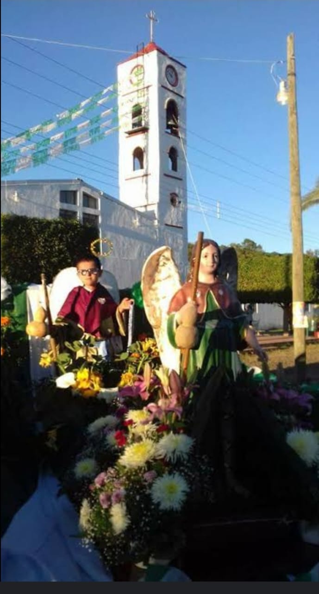
JUCHYTLAN:
La fiesta patronal de Juchytlán, una ranchería de Cuquío, Jalisco, se celebra el 24 de agosto en honor a San Bartolo, su santo patrono. Durante esta fecha, la comunidad
organiza eventos religiosos como misas y procesiones, además de actividades culturales y sociales como música, bailes y encuentros comunitarios. Es un momento especial para
los habitantes y visitantes, donde se refuerzan los lazos comunitarios y se celebra la tradición con gran devoción.
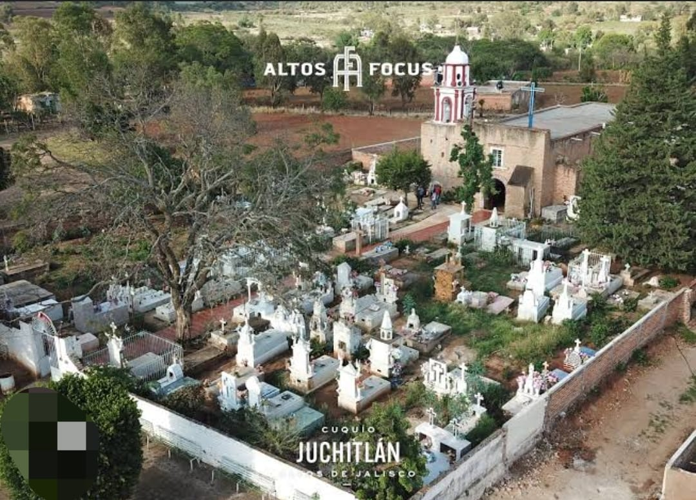
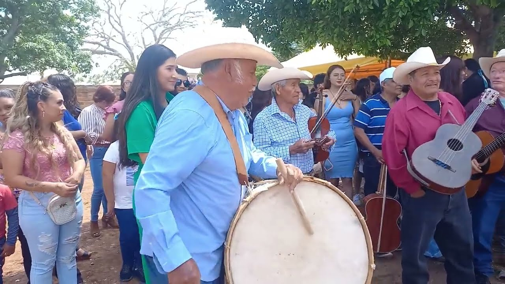
SAN JOSE DE LOS MOLINAS:
La fiesta patronal de San José de los Molinos, una ranchería de Cuquío, Jalisco, se celebra el 19 de marzo en honor a San José, el santo patrono. Durante esta festividad, la
comunidad organiza eventos religiosos como misas solemnes y procesiones, además de actividades culturales y sociales que incluyen música tradicional, bailes y convivencias
comunitarias.Es un momento especial para los habitantes y visitantes, donde se refuerzan los lazos comunitarios y se honra la tradición con gran devoción.
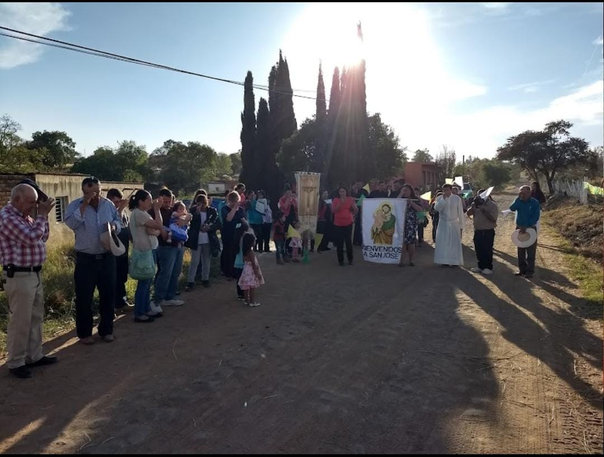
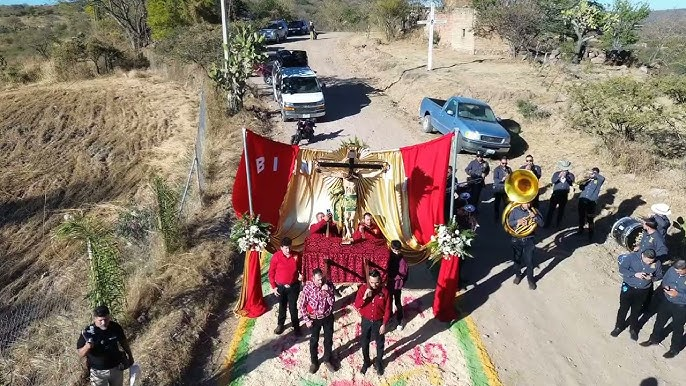
OCOTIC:
La fiesta patronal de Ocotic, una ranchería de Cuquío, Jalisco, se celebra en febrero en honor a San Pedro Apóstol, su santo patrono. Este evento reúne a la comunidad en un
ambiente lleno de tradición y alegría. Las festividades incluyen actividades religiosas como misas y procesiones, además de eventos culturales y sociales como música, bailes
y convivencias en la plaza principal. Es una oportunidad especial para los habitantes y visitantes de disfrutar de la riqueza cultural de la región y fortalecer los lazos comunitarios.